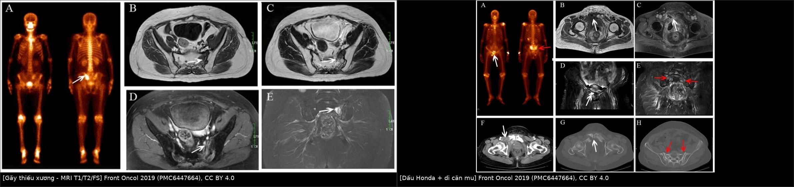
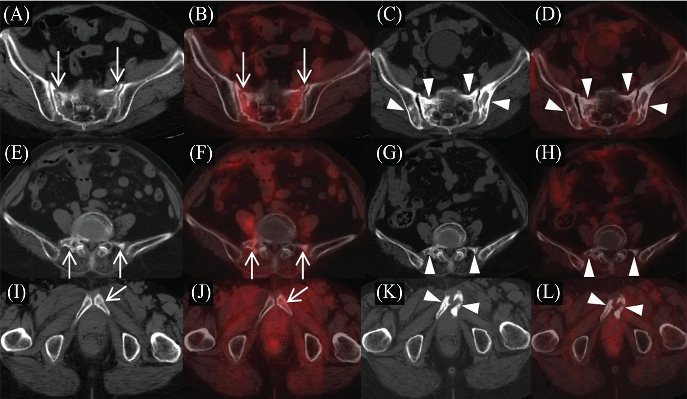
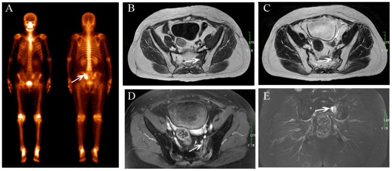
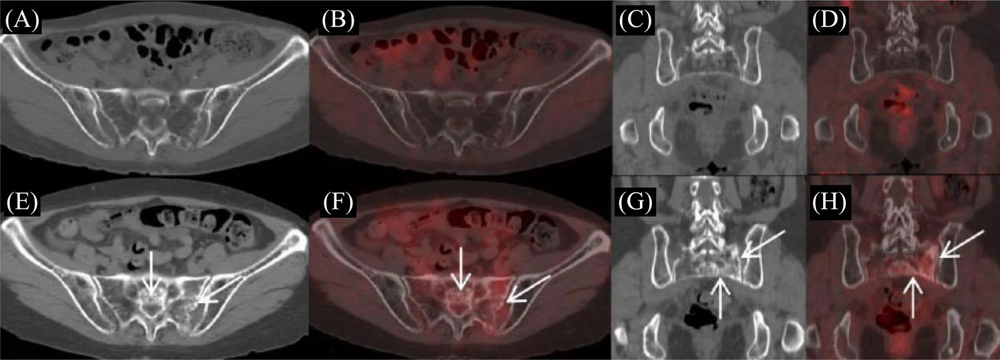
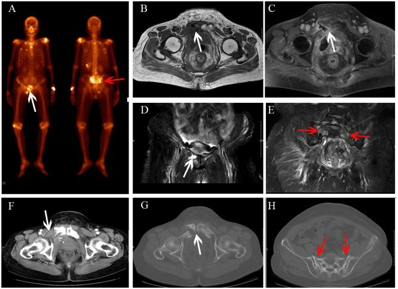

1718 — Gãy xương cùng do thiếu xương sau xạ trị tiểu khung: phân biệt với di căn xương
Tags: pattern:phu-tuy-xuong pattern:gay-thieu-xuong vung:khung-chau vung:cot-song-cung-cut score:pet-suv protocol:MRI-khung-chau anatomy:xuong-cung incidentaloma:di-can-xuong
Mức chắc chắn (certainty): tổng hợp y văn (literature synthesis) — ghép phân tích gộp 11.272 bệnh nhân (Arch Orthop Trauma Surg 2026, PMC13009100), đoàn hệ 121 bệnh nhân có liều–thể tích (In Vivo 2026, PMC13321962), 32 bệnh nhân PET/CT định lượng (Curr Med Imaging 2026, PMC13584083) và 40 bệnh nhân/57 tổn thương đối chiếu MRI với chuẩn ≥ 12 tháng (Front Oncol 2019, PMC6447664). Không có ca do nhóm tự chụp.
Câu hỏi thực hành: bệnh nhân 62 tuổi, ung thư cổ tử cung xạ trị 14 tháng trước, đau vùng cùng cụt tăng khi ngồi/đứng. PET/CT giám sát: dải ngấm FDG nhẹ hai cánh xương cùng, SUVmax 2,4, không có ổ khác. Bác sĩ lâm sàng hỏi: "Di căn xương hay gãy do xạ? Có phải sinh thiết không?" Bài chốt năm điểm: (1) gãy thiếu xương sau xạ gặp 17% (KTC 15–20%) sau xạ tiểu khung — đây là chuyện thường, không phải chuyện hiếm; (2) hình ảnh chốt là ĐƯỜNG GÃY dọc/ lượn sóng SONG SONG khớp cùng chậu trên nền xương thưa, KHÔNG phá vỡ vỏ, KHÔNG khối mô mềm; (3) FDG ngấm NHẸ theo dải (SUVmax trung bình 2,45 ± 0,74; tỉ lệ so gan 1,46 ± 0,38) — khác di căn ngấm cục, đậm; (4) xương trong trường chiếu mất ~41 HU so với ngoài trường (36,8 vs 78,0 HU, p < 0,001) — mật độ xương là dấu hiệu bối cảnh; (5) không sinh thiết khi hình ảnh điển hình; sinh thiết xương đã xạ dễ không lành và dễ nhiễm.

Trái: gãy thiếu xương xương cùng sau xạ — đường gãy thấy trên T1, T2 và FS T2 (mũi tên trắng). Phải: cùng bệnh nhân vừa có dấu "Honda" ở xương cùng vừa có di căn xương mu (mũi tên đỏ) — tình huống bẫy điển hình. Nguồn: Front Oncol 2019 (PMC6447664), CC BY 4.0. Ảnh ghép letterbox, giữ nguyên tỉ lệ.1. Tổng quan bệnh học – cơ chế hình ảnh: vì sao xương cùng "nứt" sau tia xạ
- Bệnh học: tia xạ liều trị liệu làm tổn thương tế bào tạo xương, tế bào nội mô xoang tủy và mạch máu nhỏ → giảm sinh xương, xơ hóa tủy, giảm mật độ khoáng tại chỗ. Xương vẫn còn hình dạng nhưng "giòn" như gỗ khô": chịu lực kém dù không có khối u xâm lấn. Xương cùng là nơi chịu lực nén dọc trục của toàn bộ thân mình, truyền qua hai cánh xương cùng xuống khung chậu → đó là lý do gãy thường hai bên, đối xứng, chạy dọc song song khớp cùng chậu (dấu "Honda"/H-sign trên xạ hình).
- TẠI SAO mật độ xương là dấu hiệu định lượng: trên CT, mô xương đã xạ mất khoáng nhưng không mất thể tích → HU giảm. Đo trên 32 bệnh nhân: 36,8 ± 28,6 HU trong trường chiếu so với 78,0 ± 37,3 HU ngoài trường chiếu (p < 0,001) (PMC13584083). Một ca cụ thể: 39 HU trong trường so với 110 HU ngoài trường, ranh giới đúng mép trường chiếu — nghĩa là bản đồ HU vẽ lại được hình dạng trường xạ.
- TẠI SAO MRI là modality chốt (vật lý từng chuỗi):
- Phù tủy = nước tự do tăng → T1 giảm tín hiệu, STIR/T2 fat-sat tăng tín hiệu mạnh.
- Đường gãy là dải mô xơ + mảnh xương chết, không có tế bào/mỡ → giảm tín hiệu trên CẢ T1 và T2/STIR (dải tối cắt ngang vùng phù sáng). Chính "dải tối trong vùng sáng" là thứ phân biệt gãy với di căn (di căn thay tủy bằng tế bào → T1 tối nhưng T2 sáng, và phá vỡ vỏ, và có mô mềm).
- Sau tiêm, vùng gãy ngấm thuốc do viêm sửa chữa — đừng nhầm với u; dấu hiệu phân biệt vẫn là hình dạng dải + không có khối.
- TẠI SAO PET/CT không "bắt" được gãy thiếu xương mạnh: quá trình sửa chữa xương là viêm + tạo xương, không phải tăng sinh tế bào ác tính → FDG nhẹ. Đo 32 bệnh nhân: ngấm nhẹ, lan tỏa/ dải rải rác song song khớp cùng chậu ở 96,8% (31/32), SUVmax trung bình 2,45 ± 0,74 (dải 1,5–5,1; trung vị 2,4), tỉ lệ so gan (SUR-BP) 1,46 ± 0,38; trong theo dõi, một ca giảm từ 3,4 xuống 1,4 (PMC13584083). Di căn thường ngấm cục, đậm, không theo hình khớp.
- Thời gian — khi nào nghĩ tới: trung vị 14 tháng sau xạ trị (PMC13584083); trong loạt 121 bệnh nhân, gãy xuất hiện trong theo dõi sau xạ, tỷ lệ 25,6% (31/121) (PMC13321962). 93,7% là nữ đã mãn kinh — nền loãng xương cộng thêm.
- Tần suất nền — con số phải nhớ: gộp 11.272 bệnh nhân: 17% (KTC 95%: 15–20%) gãy thiếu xương khung chậu sau xạ; xương cùng/khớp cùng chậu chiếm 71%, xương mu 11,6%, thân xương cùng 41,9% (PMC13009100). Phân nhóm: xạ triệt căn 25% vs xạ bổ trợ 6%; IMRT 8%, 3D-CRT 11%, AP/PA 22%, 4 trường 18%, VMAT/carbon-ion 30% (liều ≥ 55 Gy); MRI phát hiện 19% so với modality khác 14%.
- Yếu tố nguy cơ đã kiểm định: trong 121 bệnh nhân, tuổi ≥ 55, BMI ≤ 20,5, liều trung bình xương cùng ≥ 38 Gy, HU xương cùng < 142 liên quan có ý nghĩa ở phân tích đơn biến; BMI thấp và liều trung bình cao vẫn độc lập ở đa biến; 38 Gy là điểm cắt ROC của loạt này (PMC13321962). Gãy tập trung ở vùng liều cao hơn trong xương cùng (phân tích hợp nhất CT hoạch định với CT theo dõi).
2. Mẫu hình + chẩn đoán phân biệt theo vị trí (Gamut)
- Mẫu hình 1 — gãy thiếu xương điển hình: hai cánh xương cùng, dải phù đối xứng, đường gãy dọc song song khớp cùng chậu, không phá vỡ vỏ; thường kèm gãy mu (28,1%), cánh chậu (25%), mỏm ngang L5 hai bên (6,2%) (PMC13584083). Vị trí hay gặp: S1–S3, và một bên cánh (53,1%) / hai bên (37,5%) / lan thân (9,4%).
- Mẫu hình 2 — gãy một bên "không điển hình": chỉ một cánh xương cùng → dễ đọc thành di căn; tìm đường gãy + xương thưa quanh + bờ vỏ nguyên.
- Mẫu hình 3 — gãy + di căn cùng lúc: đây là bẫy thật (Hình phải của composite): tổn thương dạng dải ở xương cùng (lành) nhưng ổ tiêu xương + mô mềm ở xương mu (ác). Không được "thỏa mãn tìm kiếm" — phải đọc hết khung chậu.
- Gamut theo vị trí tổn thương ở khung chậu đã xạ:
- Xương cùng/khớp cùng chậu: gãy thiếu xương (hay nhất), di căn, sacroiliitis, gãy do loãng xương do corticoid, viêm xương sau xạ.
- Xương mu/ngành mu: gãy thiếu xương, di căn, gãy do suy yếu (pathological), viêm xương–hoại tử do xạ.
- Cánh chậu/thân chậu: gãy thiếu xương, di căn xương (ung thư phụ khoa hay di căn), di căn tiêu xương, tổn thương do xạ (xơ đặc).
- Thân đốt L5: gãy xẹp do loãng xương, di căn, gãy do xạ.
- Mnemonic "SIF" để không bỏ: Song song khớp cùng chậu (đường gãy) — It's osteopenic (xương thưa trong trường chiếu) — Fracture line on all sequences (đường gãy thấy trên mọi chuỗi).
3. Bảng so sánh phân biệt (ma trận đối chiếu)
| Thực thể (entity) | Hình ảnh điển hình | Chốt vào (rule-in) | Chốt loại (rule-out) | Gợi ý xác nhận |
|---|---|---|---|---|
| Gãy thiếu xương sau xạ (SIF) | Dải phù tủy đối xứng hai cánh xương cùng, đường gãy dọc/ lượn sóng song song khớp cùng chậu thấy trên T1 + T2 + FS T2; vỏ nguyên; HU 36,8 vs 78,0 trong/ngoài trường; FDG nhẹ dạng dải, SUVmax 2,45 ± 0,74, SUR-BP 1,46 ± 0,38 | Đường gãy trên mọi chuỗi + xương thưa đúng trường chiếu + không mô mềm | Phá vỡ vỏ, khối mô mềm, ngấm FDG cục đậm → không phải SIF | MRI T1 + STIR/T2FS; theo dõi 12 tháng (tổn thương giảm dần) |
| Di căn xương | Ổ T1 tối, T2/STIR sáng, thường nhiều ổ, không đối xứng, phá vỡ vỏ, mô mềm, có thể xơ đặc; FDG cục, đậm | Phá vỡ vỏ + mô mềm + ngấm cục + nhiều ổ ngoài trường xạ | Đường gãy dạng dải + bờ vỏ nguyên → nghiêng SIF | MRI + PET/CT + so phim cũ; sinh thiết chỉ khi vẫn không chắc |
| Viêm xương sau xạ | Phù tủy lan rộng, ngấm thuốc mạnh, có thể khí trong mô mềm, loét da/ đường rò | Khí trong mô mềm + đường rò + sốt | Không khí, không rò, không sốt → ít nghĩ | Cấy, CT; MRI có thể quá đánh giá |
| Sacroiliitis (viêm khớp cùng chậu) | Phù quanh khớp, bờ khớp mờ, có thể dính khớp; hai bên đối xứng | Phù quanh khớp + bờ khớp mờ + bối cảnh viêm khớp trục | Phù ngoài khớp, đường gãy trong xương → SIF | MRI; HLA-B27, lâm sàng |
| Gãy do loãng xương (không do xạ) | Giống SIF nhưng không tương ứng trường chiếu, xương thưa toàn khung | HU thấp toàn thân + không ranh giới trường xạ | Ranh giới HU đúng mép trường chiếu → do xạ | So sánh HU trong/ngoài trường; DXA |
| Tái phát u tại xương cùng | Khối mô mềm trong/ quanh xương, tiêu xương không bờ, xâm lấn ống sống | Khối mô mềm + tiêu xương + chèn ép rễ | Chỉ có dải phù + đường gãy → không phải tái phát | MRI + PET/CT; sinh thiết khi có khối |
Hai bối cảnh của cùng bài toán: bên trái là gãy thiếu xương thuần (đường gãy dải, không khối); bên phải là bệnh nhân có cả dấu Honda và di căn xương mu — bẫy "thỏa mãn tìm kiếm". Nguồn: Front Oncol 2019 (PMC6447664), CC BY 4.0.
Dấu hiệu cần đo (đừng chỉ mô tả)
- Đường gãy: có/không, hướng (song song khớp cùng chậu?), độ dài, có phá vỡ vỏ không.
- Mật độ: HU trong trường so với ngoài trường (cùng độ cao, cùng cửa sổ); ngưỡng bất thường gợi ý: < 142 HU (điểm cắt đơn biến của loạt 121 ca) (PMC13321962).
- SUVmax và SUR-BP: SIF ≈ 2,45 / 1,46; ghi cả hình thái (dải song song khớp) vì hình thái mạnh hơn con số (PMC13584083).
- Tổn thương kèm theo: đọc toàn khung chậu (mu, chậu, L5) — vì 28,1% / 25% / 6,2% có gãy kèm (PMC13584083).

Ba bệnh nhân sau xạ trị cổ tử cung: đường gãy răng cưa, song song khớp cùng chậu ở hai cánh xương cùng (mũi tên), kèm gãy mỏm ngang L5, ngành mu trái và khớp mu — gãy "theo chuỗi" của cùng một cơ chế thiếu xương. Nguồn: Curr Med Imaging 2026 (PMC13584083), CC BY 4.0.4. Protocol chụp + hệ phân tầng xử trí
- Khi nào chụp: đau vùng cùng cụt/ mông/ háng khởi phát sau xạ tiểu khung, đặc biệt 6–24 tháng sau xạ; đau khi ngồi/đứng/đi; đau không tương xứng với hình ảnh X-quang.
- Trình tự modality:
- MRI khung chậu (không cần cản quang là đủ): T1W sagittal + axial, STIR hoặc T2 fat-sat axial/ coronal, thêm T1 sau tiêm nếu cần phân biệt viêm/u. Đây là chuẩn.
- CT (lát ≤ 1 mm, cửa sổ xương): xác nhận đường gãy, xơ đặc, vỏ, và đo HU trong/ngoài trường.
- PET/CT khi cần loại trừ di căn toàn thân: đọc hình thái ngấm + SUVmax + SUR-BP.
- Xạ hình xương nếu không có MRI: tìm dấu "Honda"/H-sign — nhưng chỉ 20/40 bệnh nhân có dấu này, nên không có Honda không loại trừ (PMC6447664).
- Độ chính xác của MRI (để biết mình tin được bao nhiêu): 40 bệnh nhân, 57 tổn thương (43 gãy thiếu xương, 14 di căn): Se 95,3% (41/43), Sp 92,8% (13/14), Acc 94,7% (54/57), kappa 0,962 giữa 2 bác sĩ đọc (PMC6447664). Chuẩn tham chiếu: hình ảnh + lâm sàng + theo dõi ≥ 12 tháng.
- Xử trí (bằng chứng còn mỏng — không có RCT):
- Giảm đau, vận động có kiểm soát, tránh chịu lực mạnh; đa số giảm đau và lành trong nhiều tháng (theo dõi MRI 12–14 tháng cho thấy vùng phù giảm dần) (PMC6447664).
- Điều trị loãng xương nền (canxi, vitamin D, thuốc chống hủy xương/ tạo xương) — quyết định theo DXA và bệnh nền; chưa rõ mức lợi ích riêng cho SIF sau xạ.
- Can thiệp xâm lấn (bơm xi măng xương cùng/ sacroplasty, ốc qua cánh cùng) dành cho đau dai dẳng, không giảm sau vài tuần điều trị nội khoa — chỉ định theo đơn vị; chưa có số liệu đối chứng.
- Tránh sinh thiết khi hình ảnh điển hình: xương đã xạ kém lành, nguy cơ nhiễm và rò; sinh thiết chỉ khi có khối mô mềm/ tiêu xương/ tiến triển không khớp lời giải thích.
- Sơ đồ quyết định:
flowchart TD
A[Đau vùng cùng cụt sau xạ trị tiểu khung] --> B[MRI khung chậu T1 + STIR/T2FS]
B --> C{Có đường gãy dải song song khớp cùng chậu?}
C -->|Có| D[Gãy thiếu xương sau xạ, không sinh thiết]
C -->|Không| E{Có phá vỡ vỏ, khối mô mềm, nhiều ổ?}
E -->|Có| F[Nghĩ di căn: PET/CT, sinh thiết nếu cần]
E -->|Không| G[Đo HU trong và ngoài trường, theo dõi 3 tháng]
D --> H[Giảm đau + điều trị loãng xương + MRI lại 6-12 tháng]
G --> H
H --> I{Đau dai dẳng quá 4-6 tuần?}
I -->|Có| J[Xem xét sacroplasty hoặc ốc qua cánh cùng]
I -->|Không| K[Tiếp tục theo dõi]
5. Biến thể bình thường và cạm bẫy
- Cạm bẫy 1 — "không có dấu Honda thì không phải gãy thiếu xương". Trong loạt 40 bệnh nhân, chỉ 20 người có H-sign trên xạ hình (PMC6447664); độ nhạy của xạ hình thấp hơn MRI (gộp: MRI phát hiện 19% vs modality khác 14%) (PMC13009100). MRI là chuẩn, không phải xạ hình.
- Cạm bẫy 2 — thỏa mãn tìm kiếm. Thấy Honda ở xương cùng là "xong", bỏ qua di căn xương mu cùng bệnh nhân (hình phải của composite) — đúng ca trong PMC6447664 (Honda + di căn xương mu tiến triển thành gãy bệnh lý sau 6 tháng).
- Cạm bẫy 3 — FDG "dương tính" là di căn. SIF ngấm FDG thật (SUVmax 1,5–5,1) và có thể tăng trong giai đoạn sớm; dải song song khớp cùng chậu + không có ổ ngoài trường xạ quan trọng hơn con số SUV. Ngược lại, di căn xơ đặc có thể ngấm không cao — SUV không phải chốt.
- Cạm bẫy 4 — xơ đặc sau xạ đọc thành "đáp ứng điều trị". Xơ đặc quanh khớp cùng chậu gặp 87,5% (28/32) ở SIF (PMC13584083) — đó là phản ứng sửa chữa của gãy, không phải u lành đi.
- Cạm bẫy 5 — đường gãy bị "che" trên CT. Chỉ 68,7% (22/32) thấy đường gãy giảm đậm độ trên CT (PMC13584083); CT âm không loại trừ — cần MRI.
- Cạm bẫy 6 — gãy tiến triển/ gãy mới. Trong theo dõi, có ca gãy mới ở cánh chậu phải sau 14 tháng (PMC6447664). Đau tăng lại sau một đợt ổn định → chụp lại, đừng mặc định "đau do xạ".
- Biến thể bình thường dễ nhầm: tủy đỏ tái chuyển sau xạ/ hóa trị (T1 tối hơn, STIR hơi sáng, đối xứng, không đường gãy); đảo tín hiệu mỡ lành quanh khớp cùng chậu; mảnh xương bờ khớp (osteophyte) tạo "đường giả" trên một lát cắt — xem lại nhiều bình diện.
6. Tự lượng giá — Blind Quiz
Ca 1 — Nữ sau xạ trị cổ tử cung, đau vùng cùng cụt. Nhìn ảnh, mô tả trước.

- Gợi ý lâm sàng: xạ trị tiểu khung vì ung thư cổ tử cung; đau vùng cùng cụt một bên; xạ hình có ổ tăng hấp thu.
- Câu hỏi: Có đường gãy không? Nó thấy trên những chuỗi nào? 3 chẩn đoán phân biệt? Dấu hiệu nào loại trừ di căn?
Bấm để hiện đáp án (findings + chẩn đoán)
- Dấu hiệu: trên T1 (B), T2 (C), T1 sau tiêm (D) và FS T2 coronal (E) đều có đường gãy (mũi tên trắng) trong vùng phù tủy giảm T1/ tăng T2; xạ hình (A) tăng hấp thu kiểu "Honda" thể không điển hình.
- Chẩn đoán: gãy thiếu xương sau xạ — vì đường gãy thấy trên mọi chuỗi + bờ vỏ nguyên, không khối mô mềm.
- Phân biệt: di căn xương (T2 sáng, phá vỡ vỏ, mô mềm), viêm xương sau xạ (khí, rò), sacroiliitis (phù quanh khớp).
- Nguồn ảnh: Front Oncol 2019 (PMC6447664), CC BY 4.0.
Ca 2 — Nữ 68 tuổi, 30 tháng sau xạ trị, đau háng. Nhìn CT/PET, quyết định trước khi đọc đáp án.

- Gợi ý lâm sàng: xạ trị cổ tử cung; đau háng > 1 tháng; PET/CT được chỉ định vì "theo dõi sau điều trị".
- Câu hỏi: Hai thời điểm 10 tháng và 30 tháng khác nhau thế nào? FDG có "nóng" không? Di căn hay gãy?
Bấm để hiện đáp án (findings + chẩn đoán)
- 10 tháng (A–D): xương thưa, không tăng FDG. 30 tháng (E–H): đường gãy giảm đậm độ/ gãy vỏ ở cánh xương cùng trái + thân, xơ đặc không bờ rõ quanh đó, FDG ngấm nhẹ lan tỏa (SUVmax 3,0).
- Chẩn đoán: gãy thiếu xương sau xạ — ngấm nhẹ + dạng dải, không có ổ đậm/ mô mềm; mật độ xương giảm đúng trường chiếu.
- Phản biện: SUVmax 3,0 nằm trong dải SIF (1,5–5,1), nhưng cũng có thể gặp ở di căn nhỏ — vì vậy phải đọc hình thái và theo dõi, không chốt bằng SUV.
- Nguồn ảnh: Curr Med Imaging 2026 (PMC13584083), CC BY 4.0.
Ca 3 — Nữ 67 tuổi, rò âm đạo–tiêu hóa sau xạ. Nhìn ảnh, tìm "cái bẫy".

- Gợi ý lâm sàng: ung thư cổ tử cung đã xạ; dịch phân qua âm đạo; xạ hình có hai ổ tăng hấp thu.
- Câu hỏi: Ổ nào lành, ổ nào ác? Dấu hiệu nào trên MRI/CT nói điều đó? Sai lầm hay gặp là gì?
Bấm để hiện đáp án (findings + chẩn đoán)
- Xương cùng: dấu Honda (mũi tên đỏ) — gãy thiếu xương, phù tủy đối xứng, không khối.
- Xương mu phải: thay đổi mô mềm trên T1 và T1 sau tiêm (B, C), tiêu xương trên FS T2 (D), và trên CT sau 6 tháng: khối mô mềm + gãy bệnh lý (F, G) → di căn xương.
- Bài học: thỏa mãn tìm kiếm — thấy Honda rồi dừng lại là bỏ di căn. Luôn đọc toàn khung chậu và so vỏ xương + mô mềm, không chỉ nhìn tín hiệu tủy.
- Nguồn ảnh: Front Oncol 2019 (PMC6447664), CC BY 4.0.
Bài liên quan chéo
- 1626 – Tái phát âm đạo sau xạ trị (cùng bối cảnh "đau sau xạ": đừng gán mọi thứ cho tái phát)
- 581 – Di căn não–xương ung thư phụ khoa (phía ác tính của ma trận)
- 3017 – Gãy nén đốt sống loãng xương, vertebroplasty (cùng nguyên lý gãy thiếu xương + can thiệp xi măng)
- 307 – Gãy xẹp đốt sống sau SBRT (gãy do xạ ở trục dọc)
- 306 – Theo dõi sau SBRT di căn xương RCC (phân biệt đáp ứng – tiến triển trên xương)
Ảnh
images/1718_gay-xuong-cung_MRI_PMC6447664-F1.jpg,images/1718_gay-xuong-cung_MRI-xa-hinh_PMC6447664-F4.jpg— Front Oncol 2019, PMC6447664, CC BY 4.0.images/1718_gay-xuong-cung_CT-PET_PMC13584083-F1.jpg,...-F3.jpg,...-F4.jpg— Curr Med Imaging 2026, PMC13584083, CC BY 4.0.images/composite_sif-vs-di-can.jpg— ảnh ghép letterbox từ 2 ảnh Front Oncol (CC BY 4.0), giữ nguyên ảnh gốc.- Chi tiết giấy phép từng ảnh:
images/CREDITS.md.
Không dùng để chẩn đoán độc lập khi chưa có người hướng dẫn.